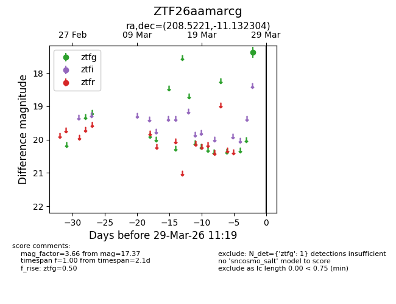
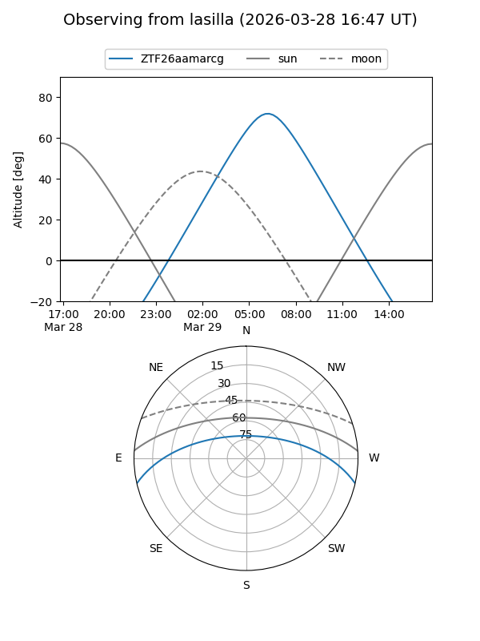
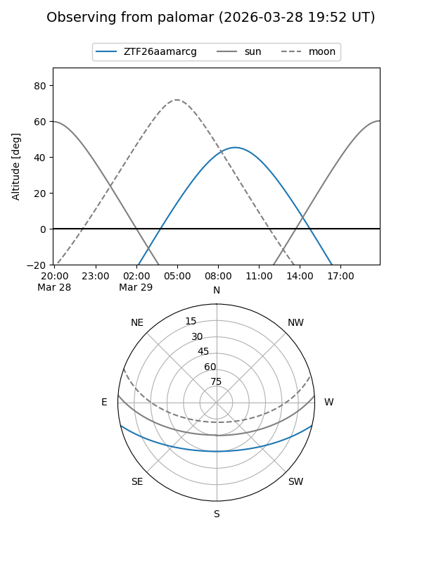

ZTF26aamarcg
Target ZTF26aamarcg at 2026-03-29 11:21
Aliases and brokers:
FINK: link
Lasair: link
ALeRCE: link
alt names
ZTF26aamarcg (ztf,fink_ztf)
Coordinates:
equatorial (ra, dec) = 208.5221,-11.13230
equatorial (HMS+DMS) = 13:54:05.30,-11:07:56.29
galactic (l, b) = (326.6605,+48.83157)
Flags:
Photometry:
last ztfg=17.37
1 ztfg detections
Lightcurve

Visibility


Additional plots